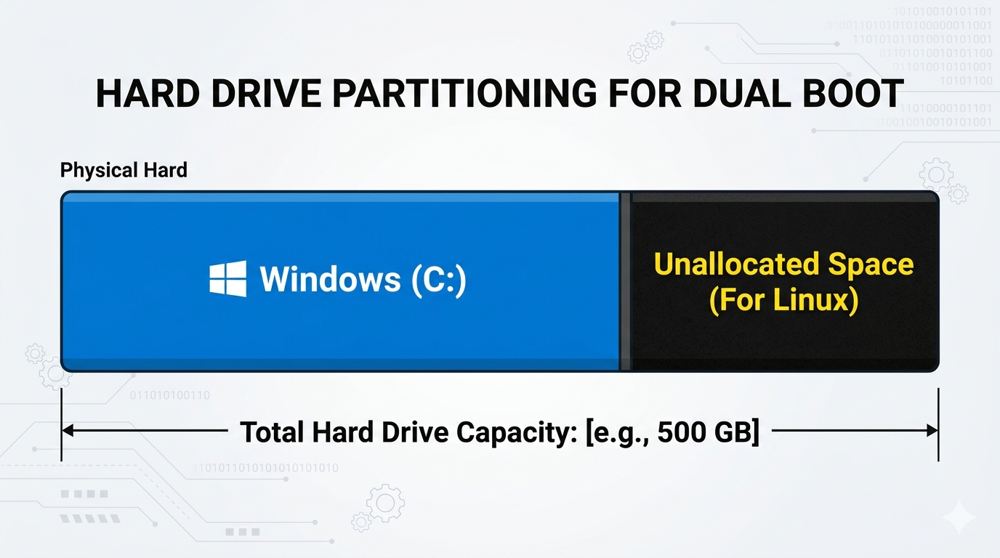

Worried about removing a Linux partition? Follow this easy, safe guide to reclaim your disk space in Windows 11 without losing your data.

If the thought of touching your disk partitions makes your palms sweat, you're not alone. Many beginners worry about deleting a Linux partition and accidentally breaking Windows.
This guide walks through the entire process step-by-step using only built-in Windows 11 tools so you can reclaim your disk space with confidence.
Before diving into the steps, make sure you have the following ready. This will make the whole process smoother and safer.
The first tool you'll use is Disk Management. It's built into Windows 11 and shows every partition on your computer.
Right-click the Start button and select Disk Management. You can also type "Create and format hard disk partitions" into the Windows search bar.
Now comes the most important part: correctly identifying which partition belongs to Linux.
Linux partitions usually show up as Unknown or unformatted, because Windows cannot read Linux file systems like ext4. They often appear as a black bar with no drive letter.
Click each partition and compare the size and label shown in Disk Management to what you already know about your setup.
Once you're confident you've selected the right partition, right-click it and choose Delete Volume.
Windows will warn that all data on this partition will be erased — that is expected, since this is the old Linux partition you are removing.
After deletion, the partition becomes Unallocated space, shown as a black bar with no label. This means the space is now free to reuse.
To actually reclaim the disk space, right-click your Windows C: drive and select Extend Volume.
Keep the default values in the wizard, click Next, and then Finish. Your Windows drive will now show the extra storage space.
If your PC still shows a Linux boot option at startup, open System Configuration by searching for msconfig.
Go to the Boot tab, select the leftover Linux entry if it appears, and click Delete, then Apply.
| Error | Quick fix |
|---|---|
| Extend Volume is greyed out | Make sure the unallocated space is immediately to the right of your C: drive. |
| Partition won't delete | Confirm you selected Delete Volume, not Shrink Volume. |
| Old Linux boot menu still appears | Remove the leftover entry in System Configuration (msconfig) under the Boot tab. |
Congratulations — you've successfully removed the Linux partition from Windows 11 and reclaimed the disk space without installing any extra tools.
If you're curious about exploring Linux again later, check out our related article Beginner-Friendly Linux Commands to learn the basics before your next attempt.